Собственные числа, вектора, и модель Лесли - Лефковича
Contents
Собственные числа и вектора
По опрделению, собственное число 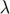 и собственный вектор 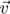 матрицы 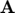 это такие элементы, которые удовлетворяют
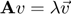
Перенся всё влево получаем
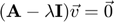
Некоторая матрица 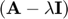 переводит вектор в нулевой, значит её определитель равен нулю:
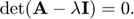
Пусть нам задана матрица
A = [1, -1, 0;
0, 2, 0;
0, 0, 3]
A =
1 -1 0
0 2 0
0 0 3
и необходимо найти её собственные числа. Это можно сделать с помощью функции eig.
eig(A)
ans =
1
2
3
Чтобы вдобавок найти и собственные вектора, необходимо "запросить" два возвращаемых значения функции eig.
[V, D] = eig(A)
Здесь V - матрица, в столбцах которой стоят нормированные собственные вектора 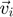, а матрица D - диагональная, где собственное число 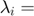 D(i,i) отвечает собственному вектору 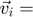 V(:, i).
V =
1.0000 -0.7071 0
0 0.7071 0
0 0 1.0000
D =
1 0 0
0 2 0
0 0 3
Второй собственный вектор V(:, 2) есть вектор v_2 = [-1; 1; 0] (с точностью до константы). Тогда, уможая матрицу на 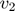 4 раза, собственный вектор 4 раза умножится на собственное число 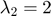, то есть
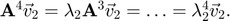
v_2 = [-1;1;0]; A^4 * v_2
ans =
-16
16
0
Лесли: инициализация
Рассмотрм модель Лесли эволюции численности населения с тремя группами населения. Обозначим их "молодые" (0 - 20 лет), "взрослые" (21 - 50), и "пожилиые" (51-90). Распределение по возрастам условное.
Запишем размеры трех групп в переменную m.
m = [20 30 40]; cumsum(m) (m-1)./m
ans =
20 50 90
ans =
0.9500 0.9667 0.9750
Матрица Лесли для трех групп имеет вид
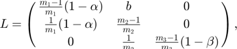
где 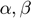 - смертность в первой и третьей группах, соответсвтенно; 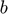 - рождаемость во второй группе.
Функция diag создает из вектора матрицу, где на диагонали стоит тот самый вектор. Второй аргумент контролирует номер диагонали (+2 для сдвига вверх на две, -1 для сдвига на одну вниз от главной диагонали).
Эти операции помогут при создании матрицы Лесли больших размеров.
diag((m-1)./m)
ans =
0.9500 0 0
0 0.9667 0
0 0 0.9750
diag(1./m(1:end-1), -1)
ans =
0 0 0
0.0500 0 0
0 0.0333 0
diag((m-1)./m) + diag(1./m(1:end-1), -1)
ans =
0.9500 0 0
0.0500 0.9667 0
0 0.0333 0.9750
Лесли: создание матрицы L
L = diag((m-1)./m) + diag(1./m(1:end-1), -1); alpha = .05; beta = .5; b = .04;
L(1, 2) = b; L(1:2, 1) = L(1:2, 1) * (1 - alpha); L(end, end) = L(end, end) * (1 - beta)
L =
0.9025 0.0400 0
0.0475 0.9667 0
0 0.0333 0.4875
Лесли: собственные числа и вектора матрицы L
Найдем собственные числа и вектора матрицы Лесли.
[V, D] = eig(L)
Обратим внимание на то, что все собственные числа по модулю меньше 1. Это значит, что при большом времени наша популяция будем уменьшаться.
V =
0 0.4201 0.8751
0 0.9055 -0.4822
1.0000 0.0602 -0.0409
D =
0.4875 0 0
0 0.9887 0
0 0 0.8805
Лесли: симуляция
Пусть в начальным момент времени у нас имеется следующее распрделение численнсти населения:
p_0 = [10; 40; 20];
После одного года это число изменится:
p_1 = L*p_0
p_1 = 10.6250 39.1417 11.0833
Зададим период в 100 лет и посчитаем число населения в каждый момент времени.
N = 100; p = zeros(3, N + 1); p(:, 1) = p_0; for k = 1 : N p(:, k+1) = L * p(:, k); end
Лесли: разложение начального условия по собственным векторам матрицы L
Собственные вектора матрицы Лесли задают нормированный базис (но не ортогональный). Чтобы разложить начальное распредление p_0 по этому базису, необходимо найти такие коэффициенты 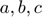, что
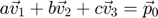,
или в матричнов виде
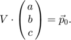
Таким образом,
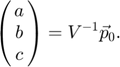
% inv(V) * p_0 % V^-1 * p_0 abc = V \ p_0
abc = 17.2709 40.0279 -7.7900
Проверим полученное разложение:
a = abc(1); b = abc(2); c = abc(3); v1 = V(:, 1); v2 = V(:, 2); v3 = V(:, 3); disp(a*v1 + b*v2 + c*v3);
10.0000 40.0000 20.0000
Лесли: анализ
Важное свойство в линейной алгебре (и в модели Лесли):
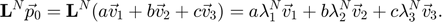
Возведем все собственные числа в степерь N.
disp(diag(D).^N)
Заметим, что все собственные числа, кроме одного, занулились (а точнее, стали очень близки к нулю).
0.0000
0.3212
0.0000
Таким обрзом, при больших временах можно аппроксимировать распределение численности населения собственным вектором, отвечающим наибольшему собственному числу.
[lam_max, max_ind] = max(diag(D)); p_N_approx = abc(max_ind) * lam_max.^(0:N) .* v2;
Разница в конечный момент времени между нашей аппроксимацией и точным значением есть
disp(p_N_approx(:, end) - p(:, end));
1.0e-04 *
0.2016
-0.1111
-0.0094
Посчитаем общую численность населения в каждый момент времени и запишем её в p_size.
p_size = sum(p);
Построим график эволюции численности населения
figure(9); plot(0:N, p_size, '-', 'LineWidth', 2); % Общее количество населения grid on; hold on; plot(0:N, sum(p_N_approx), '.r', 'MarkerSize', 6); % Аппроксимация общего количества населения plot(0:N, p, '-.'); % Количество "молодых", "взрослых" и "пожилых" hold off; xlabel('n, year'); legend('Population size', 'Population approximation', 'Babies', 'Adults', 'Elderly'); title('Poupulation evolution over time', 'according to the Leslie model');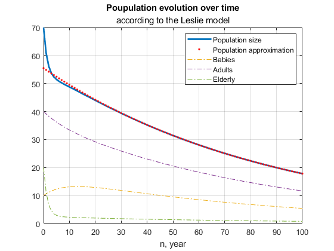